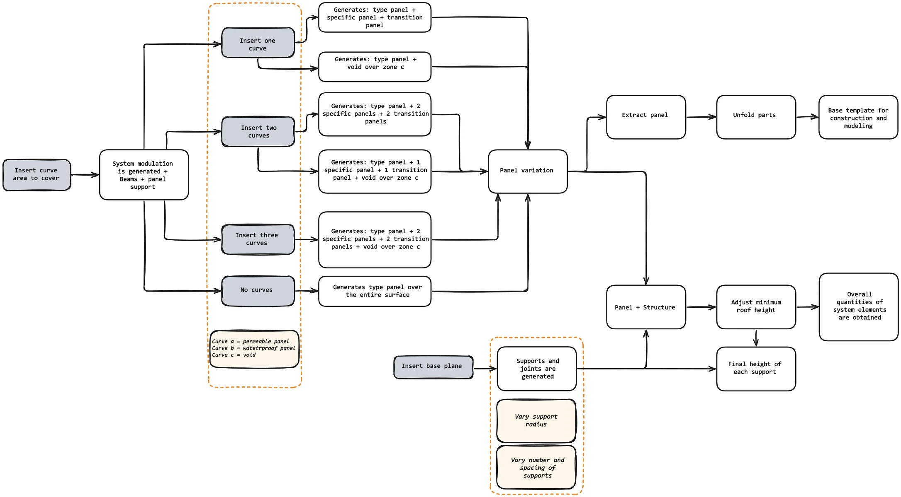
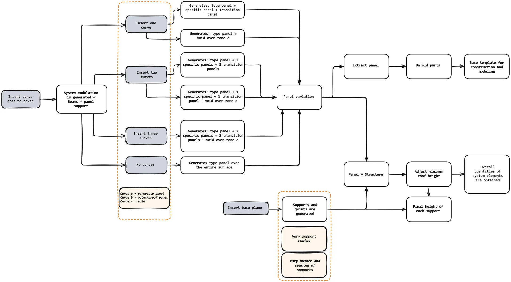

SHADE STRUCTURES SYSTEM FOR PUBLIC SPACE
Location// Cali, Colombia
Instructor// Rodrigo Vargas
Type// Parametric Research
Team// Avril Figueroa, Diego Serna.
Approaching the project, we considered it an opportunity to engage in parametric design for the first time, exploring a methodology that shifts the architectural focus from static forms to systems defined by relationships and variables, and moving deliberately from theory into practice. The first step was an exploratory phase in Grasshopper, testing data structures, component behavior, and how environmental inputs could drive geometry. From that foundation, I developed a modular shade structure system for public space, derived from a site responsive grid and using digital tools not just to draft but to generate spatial logic and geometry. The system adapts to site conditions such as program, orientation, and climate, so it can scale and morph across different contexts. Roles on the project were intentionally shared and rotating, and both team members engaged in every stage: research, scripting, iteration, and prototyping, so we could learn the full workflow end to end.
After defining the system, we advanced from beams, columns, and joints to the enclosure module through intensive geometric exploration and zoning. We developed a folded panel concept: a base surface receives a subdivision pattern, two perpendicular cuts, and a simultaneous fold along four axes. Because folds need travel ranges at planes, vertices, and edges, we designed mobile or alternate connections; the panel is then sectioned to free movement and standardize the support substructure. Variations were first modeled in Rhino to preview constructability, but we migrated the panel to an independent Grasshopper algorithm to minimize elements, edit variations in real time, test solar-exposure responses, and produce a clear visual gradient across zones.
In the final stage we consolidated the workflow into a fully adaptable system. To deploy it on any site, the designer defines three inputs: the overall boundary, the working surface with its topography, and the open and closed zones. With those inputs set, the rule set generates the architectural solution automatically: structural grid, column positions, beam paths, joint locations, and a folded-panel layout with the appropriate variation per zone. In parallel, the script produces a bill of quantities with counts of joints and columns, panel tallies by type, and dimensioned outputs for each member. Checks for maximum spans, slope constraints, and fold limits are built in, and the model exports directly to drawings or fabrication files with minimal rework. The pipeline runs iteratively; any input change updates structure, panels, and quantities in real time.
This experience taught me how to identify strong entry points for a parametric project and to decide which workflow is optimal for what I want to achieve, whether traditional or parametric.
 
